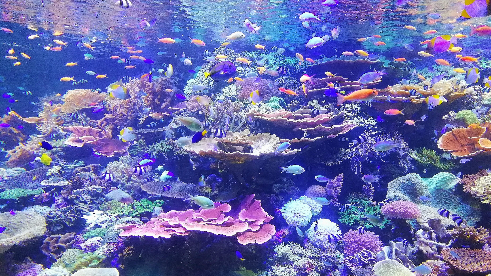
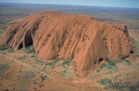
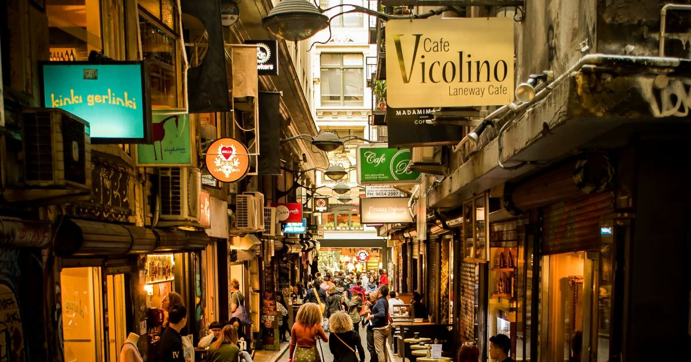
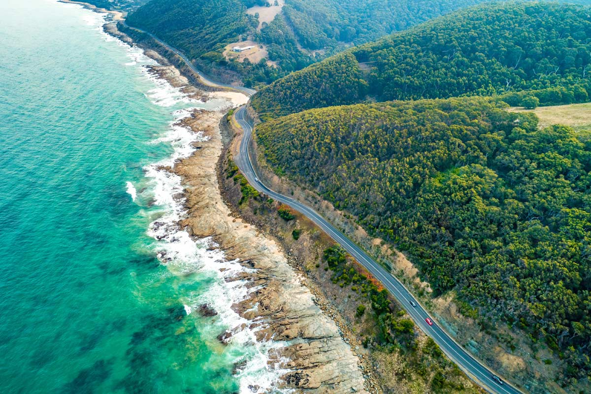
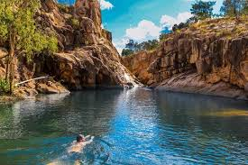

NEW SOUTH WALES
NEW SOUTH WALES
Sydney Opera House
Ikon arsitektur modern abad ke-20 yang terkenal dengan atap cangkang putih berbentuk layar kapal.
Pelajari Detail Destinasi →
QUEENSLANDGreat Barrier Reef
Sistem terumbu karang terbesar di dunia dengan keanekaragaman hayati bawah laut yang menakjubkan.
Pelajari Detail Destinasi →
NORTHERN TERRITORYUluru / Ayers Rock
Monolit batu pasir raksasa yang sakral di jantung gurun merah (Outback) Australia.
Pelajari Detail Destinasi →
VICTORIAMelbourne Laneways
Jaringan gang-gang seni perkotaan yang kaya akan mural, galeri tersembunyi, dan budaya kopi legendaris.
Pelajari Detail Destinasi →
VICTORIAGreat Ocean Road
Rute perjalanan pesisir pantai spektakuler yang menampilkan formasi tebing batu kapur 'Twelve Apostles'.
Pelajari Detail Destinasi →
NORTHERN TERRITORYKakadu National Park
Taman nasional terluas di Australia dengan keindahan lahan basah, air terjun, dan lukisan batu adat purba.
Pelajari Detail Destinasi →